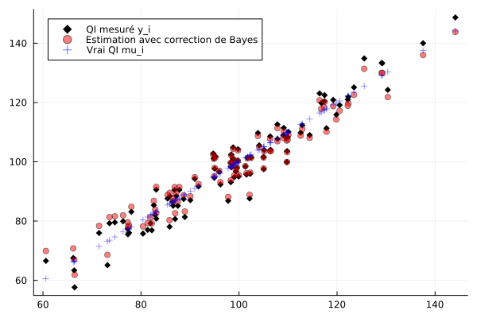

20 Fisher VS Bayes
La statistique vue dans ce cours repose sur la notion de modèle statistique (une famille de lois) dans laquelle on cherche « la meilleure loi » qui explique les observations, le plus souvent à l’aide du maximum de vraisemblance. Cette approche s’appelle fréquentiste et elle est associée à Ron Fisher. Elle présente une limitation cruciale : parfois, on a des informations a priori sur le paramètre à estimer, par exemple quand ce paramètre est lui-même aléatoire.
Je vais expliquer cette limitation sur un exemple, et montrer comment un point de vue un peu différent (le point de vue bayésien) permet de le résoudre partiellement.
20.1 Introduction
Les test d’intelligence (comme le QI) sont standardisés : la répartition du QI d’un test sur une large population est une gaussienne centrée en 100, et d’écart-type 15. Si l’on prend un individu au hasard, la probabilité que son QI soit entre 85 et 115 est de 68%.
Dans une population de \(n=100\) individus, on note \(\mu_i\) le QI de la personne \(i\). Pour mesurer les \(\mu_i\), on fait passer un test à chaque personne : le résultat \(x_i\), est seulement une estimation de \(\mu_i\) : on se doute bien qu’un seul test ne suffit pas à déterminer exactement \(\mu_i\). Une personne de QI \(\mu_i=105\) pourrait très bien obtenir un score de \(x_i=99\) si elle n’est pas en forme ce jour là. Cependant, il est raisonnable de penser que \(x_i\) est centrée en \(\mu_i\), et d’écart-type pas trop grand, disons \(\sigma=5\), supposé connu : \[x_i = \mu_i + N(0,\sigma^2).\]
20.2 Le point de vue de Fisher
20.2.1 Estimation des \(\mu_i\)
En statistique fréquentiste, les \(x_i\) sont des réalisations de variables iid \(N(\mu_i, \sigma^2)\) et on cherche à estimer \(\mu_i\). Cherchons l’estimateur du maximum de vraisemblance \(\hat{\mu}_{\mathrm{EMV}}\). La densité de \(x\) est \(N(\mu, \sigma^2)\) donc on se place dans un modèle gaussien \(N(m,\sigma^2)\) et on cherche à estimer \(m\) ; la log-vraisemblance \(\ell(m)\) est égale à \[\ln(2\pi \sigma^2)^{-1/2} - \frac{(x_i-m)^2}{2\sigma^2}\]donc l’EMV est \[\hat{\mu}_{\mathrm{EMV}} = \arg\max_m \ell(m) = x_i.\] Il n’y a aucune surprise ici. Sans information supplémentaire et si l’on suppose que les \(x_i\) sont centrés sur les \(\mu_i\), l’estimateur du maximum de vraisemblance est simplement le résultat observé.
20.2.2 La personne la plus intelligente
Imaginons que les tests \(x_i\) aient une répartition comme suit :

La personne “la plus intelligente” a obtenu \(x_i = 150\). On peut estimer son QI à 150, mais il y a quand même un doute : dans la population, le QI \(\mu_i\) est sensé être à peu distribué selon \(N(100, 15^2)\). Un QI de 150 représente à peu près une déviation de 3.3 écarts-types par rapport à la moyenne 100 : un événement de cet ordre a une probabilité d’environ 0.1% (cela s’estime par exemple via Théorème 5.1). La probabilité pour que parmi 100 personnes, au moins une ait un QI plus grand que 150 est donc \(1 - 0.001^{100} \approx 10\%\). Ce n’est pas impossible, mais c’est peu.
Or, il y a une autre possibilité : peut-être que la personne \(i\) a un QI plus proche de 140, mais que ce jour-là, elle a eu de la chance. En fait, la probabilité pour qu’une personne ait un \(\mu_i\) qui dévie de plus de 2 écarts-types (donc, \(\mu_i>130\)) est de 5%, et la probabilité pour que le jour du test, cette personne dévie de 2 écarts-types (donc \(x_i-\mu_i>10\)), est encore de 5%. Cela fait une probabilité d’environ 0.25%.
Lemme 20.1 Il est plus probable que la personne “la plus intelligente” de la salle soit 1) assez intelligente avec un \(\mu_i\) de 130, et 2) qu’elle ait eu de la chance le jour du test - en tout cas, c’est 2 à 3 fois plus probable que le fait qu’elle ait un QI \(\mu_i\) supérieur à 150.
La théorie statistique « à la Fisher » ne permet pas d’intégrer une connaissance a priori sur le paramètre \(\mu\) à estimer.
Dans notre cas, la connaissance a priori qu’on a sur les \(\mu_i\) est qu’ils sont eux-mêmes aléatoires, distribués selon \(N(100, 15^2)\) : il est donc presque impossible qu’un des \(\mu_i\) soit plus grand que, disons, 200. La statistique bayésienne permet d’intégrer cette connaissance a priori et de corriger l’estimation naïve de Fisher.
20.3 Le point de vue de Bayes
Comme les \(\mu_i\) sont eux-mêmes aléatoires, la « meilleure approximation1 » de \(\mu\) sachant \(\mu + N(0,\sigma^2)\) est tout simplement une espérance conditionnelle. Or, dans le cas d’une perturbation gaussienne, on sait calculer cette espérance conditionnelle.
20.3.1 Formule de Tweedie
Théorème 20.1 (Formule de Tweedie) Soit \(X\) une variable aléatoire de densité \(\varrho\) et soit \(\varepsilon \sim N(0, \sigma^2)\). On pose \(Y = X+\varepsilon\), qui est une version bruitée de \(X\). Si \(f\) est la densité de \(Y\), alors \[\mathbb{E}[X | Y] = Y + \sigma^2 \nabla_y \ln f(Y). \tag{20.1}\]
Preuve. La loi jointe du couple \((X,Y)\) est \(\varrho(x)g_\sigma(y-x),\) où \(g_\sigma\) est la densité de \(N(0, \sigma^2)\). La loi de \(Y\) est la convolution \(\varrho * g_\sigma = \int g(x)g_\sigma(y-x)dx\). Enfin, la densité conditionnelle de \(X\) sachant \(Y\) est donnée par la formule de Bayes, \[ \frac{\varrho(x)g_\sigma(y-x)}{\int g(x)g_\sigma(y-x)dx}.\] L’espérance conditionnelle \(\mathbb{E}[X|Y=y]\) vaut donc \[\int \frac{x\varrho(x)g_\sigma(y-x)dx}{\int g(x)g_\sigma(y-x)dx}.\] Dans l’intégrale du haut, on peut artificiellement écrire \(x= x-y+y\) afin d’obtenir \[\int \frac{(x-y)\varrho(x)g_\sigma(y-x)dx}{\int g(x)g_\sigma(y-x)dx} + y\int \frac{\varrho(x)g_\sigma(y-x)dx}{\int g(x)g_\sigma(y-x)dx}.\] Le second terme est égal à \(y\), et en dérivant sous l’intégrale, on voit que le premier est égal à \(\sigma^2\nabla_y \ln (\varrho * g_\sigma)(y)\).
20.3.2 Application
Soit \(\mu\) une variable aléatoire réelle avec densité \(\varrho\) et \(x = \mu + N(0,\sigma^2)\) ; l’estimateur « bayésien » de \(\mu\) sachant \(x\) est donné par \[\hat{\mu} = \underbrace{x}_{\hat{\mu}_{\mathrm{EMV}}} - \underbrace{\sigma^2 \nabla_x \ln f(x)}_{\text{correction de Bayes}}, \tag{20.2}\] où \(f = \varrho * g_\sigma\) est la densité de \(x\).
Noter que cette formule suppose crucialement que \(\sigma\) est connu. Lorsqu’il ne l’est pas, il faut l’estimer : cela donne naissance à l’estimateur de James-Stein, qui sera présenté dans la prochaine section.
Exemple 20.1 Dans le cas qui nous intéresse, les \(x_i\) sont précisément de la forme \(\mu_i + \varepsilon_i\), et leur loi est donc \(N(100, \tau^2)\) avec \(\tau^2 = 15^2+5^2\). On connaît directement leur densité et la log-dérivée de celle-ci, \[\nabla_y \ln f(y) = -\frac{y-100}{\tau^2}.\] donne alors, avec \(\sigma = 5\), \[\hat{\mu_i} = x_i - \left(\frac{\sigma}{\tau}\right)^2 (x_i-100) \approx x_i - 0.69 (x_i-100), \tag{20.3}\] ce qui dans le cas qui nous intéresse (\(x_i = 148\)) donne une estimation de \(\mu_i = 143\) pour une vraie valeur d’environ \(\mu_i=142\).

On peut interpréter la formule Équation 20.3 comme un estimateur de régression vers la moyenne : si \(x\) est plus grand que la moyenne 100, l’estimation est tirée vers le bas ; si \(x\) est plus petit, elle est tirée vers le haut. C’est un cas particulier d’une technique générale qui donne des estimateurs plus robustes que l’estimateur du maximum de vraisemblance dans tous les cas, comme l’estimateur de James-Stein. Ces estimateurs (tout comme Équation 20.3) sont « biaisés » au sens où, si l’on considère les \(\mu_i\) comme fixés, ils ne sont pas centrés en \(\mu_i\). Cependant, ils ont un risque quadratique plus faible que l’estimateur du maximum de vraisemblance. Pour ces raisons, ils ne rentrent pas vraiment dans le cadre fréquentiste « classique » de Fisher.
20.3.3 Le biais de sélection
Dans la formule de l’estimateur Équation 20.2, lorsque la réalisation \(x\) est très éloignée de la moyenne, la correction de Bayes est très forte. L’estimateur a intégré la remarque qu’on avait fait dans la section précédente : plus \(x\) est éloigné de la moyenne, plus il est probable que la vraie valeur de \(\mu\) soit plus proche de la moyenne. Ce phénomène se rencontre souvent sous le nom populaire de « paradoxe du survivant » ou « biais de sélection ».
L’estimation naturelle a toujours tendence à sous-estimer le rôle du hasard dans les phénomènes extrêmes. Typiquement, les grandes fortunes doivent leur richesse à un mélange de talent et de chance, mais les admirateurs béats ne retiennent que le talent.
au sens \(L^2\) — je vous renvoie au cours de probabilités théoriques. ]↩︎